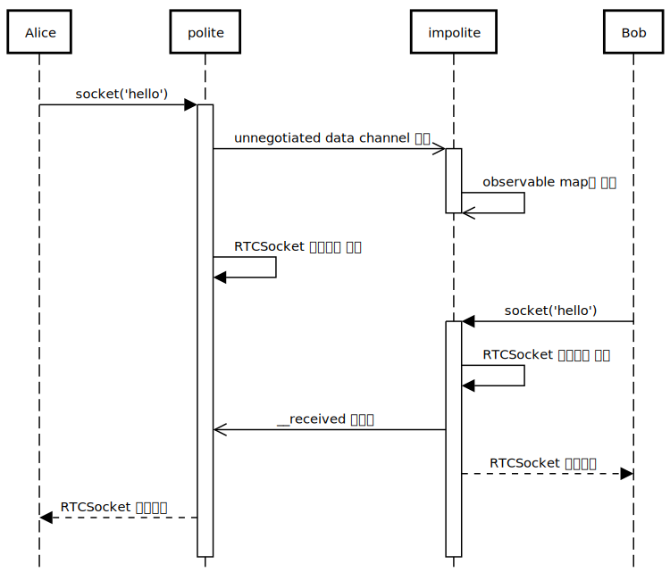
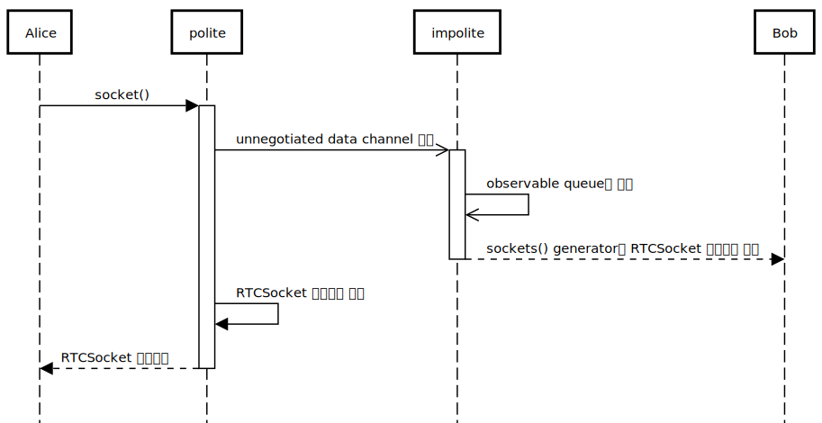

데이터를 주고받는 RTCSocket
텍스트, 이진 데이터 등 다양한 데이터를 주고 받을 수 있는 창구인 RTCSocket을 사용해 봅시다.
빠른 가이드
두 탭을 연결시키는데까지 성공했으니, 이제 데이터를 주고받아 봅시다.
데이터를 주고받는 건 RTCSocket 인스턴스(이하 소켓)가 담당합니다.
소켓은 데이터를 양방향으로 주고받을 수 있는 일종의 창구입니다.
한 엔진에서 여러개의 소켓을 열 수 있으며 각 소켓은 ID로 구분됩니다.
이제 chat이라는 소켓을 열고 서로 인사를 보내봅시다.
const engine = new RTCEngine(signaler)
engine.socket('chat').then(socket => {
socket.on('data', data => console.log(data))
socket.write('hello RTCSocket!')
})파일을 저장하고 두 탭을 모두 새로고침하면 양쪽 모두 콘솔에 hello RTCSocket!이 떠있을겁니다.
소켓 생성하기
소켓을 생성하는 방법에는 크세 두가지가 있어요.
첫번째는 위 예시에서처럼 동일한 ID로 양쪽에서 RTCEngine의 socket() 메소드를 호출하는 거에요. 이건 negotiated socket이라고 부를게요.
다른 방법은 ID를 명시하지 않고 socket() 메소드를 호출하는 것입니다. 그러면 sockets async generator를 통해서 소켓을 받을 수 있습니다. 이건 unnegotiated socket이라고 부르겠습니다.
// async 함수 안이나 top level await가 지원되는 브라우저에서 실행되어야 합니다.
for await (const socket of engine.sockets()) {
// 무언가 하기...
}한가지 특이한 점은 WebRTC 연결이 형성되었는지 기다리지 않고 바로 소켓을 생성해도 괜찮다는 것입니다.
RTCEngine은 대부분의 인터페이스가 연결 상태에 영향을 받지 않도록 설계되어 있어요.
실제로는 socket()이 호출되면 내부적으로는 연결이 형성될때까지 기다렸다가 데이터 채널을 열고, 이 데이터 채널을 기반으로 소켓이 만듭니다.
데이터 주고받기
소켓은 상당히 간단한 인터페이스를 가지고 있어요.
먼저 데이터를 전송하려면 write() 메소드를 사용하세요.
// 텍스트 메시지 보내기
socket.write('hello')
// 이진 데이터(ArrayBuffer) 보내기
const data = new Uint8Array([1, 2, 3, 4, 5])
socket.write(data.buffer)소켓은 Node.js의 EventEmitter를 닮은 이벤트 인터페이스를 가지고 있어요. 데이터을 받으려면 data 이벤트에다가 이벤트 리스너를 설치하세요.
socket.on('data', data => {
// 첫번째 인자(payload)는 보낸 데이터
})커스텀 이벤트 사용하기
writeEvent() 메소드를 사용하면 이벤트를 전송할수도 있어요.
// 피어 1
// 첫번째 인자는 이벤트 이름, 두번째 인자는 payload입니다.
// payload는 이벤트 리스너의 첫번째 인자로 전달됩니다.
socket.writeEvent('question', '고양이의 다리의 개수는?')
// 피어 2
socket.on('question', question => {
console.log(`질문 받음: ${question})
})다 쓰고나면
소켓을 닫아주세요. close() 메소드로 닫을 수 있습니다.
한쪽 피어에서만 close()를 호출해주세요.
socket.close()소켓이 닫히면 close 이벤트가 발생해요.
양쪽 모두 발생하는 이벤트여서 close() 메소드를 호출한 쪽에서도 발생하는 이벤트라는 점을 주의하세요.
socket.on('close', () => console.log('소켓 닫힘'))디테일 가이드
생성 과정
먼저 negotiated socket같은 경우 다음과 같은 과정으로 생성됩니다.
socket(ID) 호출 시:
- role이
polite라면- ID를 레이블로 unnegotiated data channel 만들기
RTCSocket생성자를 호출해서 인스턴스 생성__received이벤트가 도착할때까지 대기- 만들어진 소켓 resolve
- role이
impolite라면start()메소드에서 설치된datachannel이벤트 핸들러:negotiatedDataChannelobservable map에 키를 ID로, 값을 받은 데이터 채널 인스턴스로 설정.socket()메소드:negotiatedDataChannel의 ID를 키로 하는 값이 생기길 기다려서 데이터 채널 인스턴스 받기- 받은 데이터 채널로
RTCSocket생성자를 호출해서 인스턴스 생성 __received이벤트 보내기- 만들어진 소켓 resolve

그리고 unnegotiated socket의 생성 과정은 다음과 같아요.
socket()호출한 피어- 레이블을
RTCEngine-unnegotiated-socket를 prefix로 해서 unnegotiated data channel 만들기 RTCSocket생성자를 호출해서 인스턴스 생성__received이벤트가 도착할때까지 대기- 만들어진 소켓 resolve
- 레이블을
- 받는 피어
start()메소드에서 설치된datachannel이벤트 핸들러: 받은 데이터 채널의 label이RTCEngine-unnegotiated-socket으로 시작하면unnegotiatedDataChannelsobservable queue에 pushsockets()generator:unnegotiatedDataChannels에 새 데이터 채널이 들어오면 그럴로RTCSocket인스턴스 생성하고 만들어진 소켓 resolve

커스텀 이벤트 전달
writeEvent() 메소드는 다음과 같은 메시지를 만들어 write()에 전달합니다.
{
_channelEngineCustomEvent: true,
event: '<첫번째 인자: 이벤트 이름>',
payload: '<두번째 인자: payload>'
}데이터 채널 버퍼 관리
데이터 채널을 그대로 사용하지 않고 RTCSocket으로 감싸는 가장 큰 이유는 버퍼 관리 때문입니다.
데이터 채널은 메시지에 대해 다음과 같은 제약사항을 가지고 있어요.
주의: 이 제약사항들은 표준화되지 않은 implementation detail에 해당되요. 브라우저마다 달라질 수 있는 내용들이에요.
- 각 메시지의 크기가 약 250KB를 넘기면 안됩니다.
- 전체 버퍼 사이즈(
bufferedAmount로 확인 가능)가 약 10MB를 넘기면 안됩니다.
이 제약사항들을 위반 시 데이터 채널은 바로 닫혀 버려서 더이상 사용할 수가 없어요.
첫번째 문제를 해결하기 위해서 RTCSocket은 250KB보다 큰 데이터는 전송하지 않고 거부해요.
만약 이보다 큰 데이터를 전송해야 한다면 Transaction을 사용하세요.
두번째 문제를 해결하기 위해서 RTCSocket은 데이터 채널의 bufferedamountlow 이벤트와 bufferedAmountLowThreshold 속성을 이용해요. bufferedAmountLowThreshold를 특정 값으로 설정 시, bufferedAmount가 이 값보다 낮아진다면 bufferedamountlow 이벤트를 발생시켜요.
이걸 이용하면 버퍼에 원하는만큼의 빈자리가 날때까지 기다릴 수 있어요. 버퍼 사이즈 - 보낼 데이터의 크기를 bufferedAmountLowThreshold로 설정하고 위 이벤트가 발생할때까지 기다리는거죠.
실제 RTCSocket의 코드 일부분은 이렇게 짜여져 있습니다.
// 실제 코드와 완전히 동일하지 않습니다.
// 버퍼에 빈공간이 있나 확인
if (data.byteLength + this.dataChannel.bufferedAmount > DATA_CHANNEL_BUFFER_SIZE) {
// 버퍼에 data.byteLength만큼의 빈공간이 날때까지 대기
this.dataChannel.bufferedAmountLowThreshold = DATA_CHANNEL_BUFFER_SIZE - data.byteLength
await once(this.dataChannel, 'bufferedamountlow')
// 초기화
this.dataChannel.bufferedAmountLowThreshold = 0
}
// 데이터 전송
this.dataChannel.send(data)마지막으로, ArrayBuffer 타입이 아닌 데이터들은 모두 버퍼 공간과 상관없이 전송된다는 점을 주의해야 합니다. 확인하지 않는 이유는 예를 들어서 텍스트 하나가 얼마만큼의 버퍼 공간을 잡아먹을지는 implementation detail이여서 미리 알 수 없기 때문입니다.